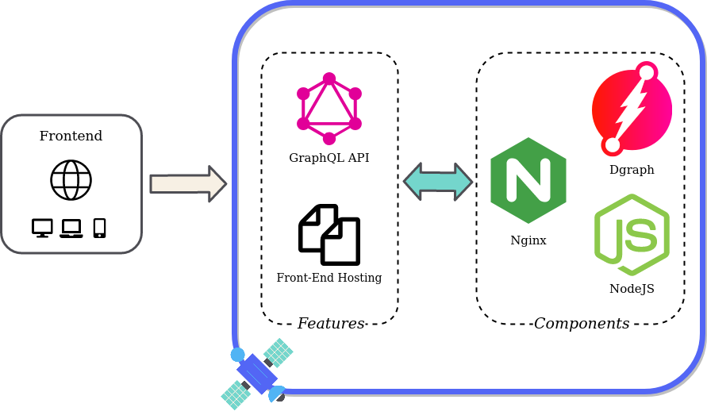

Case Study

1) What is Satellite?
Satellite is an open-source GraphQL Backed-as-a-Service (BaaS) that enables teams to easily deploy and manage GraphQL backends for web applications.
Satellite abstracts away the complexity of setting up the infrastructure for a backend and the unique challenges of configuring a GraphQL server. It allows the application developer to define their entire backend using only a GraphQL schema. And with its multi-tenant architecture based on Kubernetes, Satellite allows developers to create and use as many backends as they need. Satellite is a great fit for new applications, where ease of use and speed of deployment is the top priority.
In this case study, we describe how we designed and built Satellite, the specific tradeoffs we made, and some of the technical challenges we encountered. In order to fully understand Satellite's design, first we'll discuss the general architecture of a modern web application - and one specifc application that drove the development of GraphQL.
2) Web App Architecture
2.1) Frontend vs Backend
Web applications can be thought of has having two parts - the frontend and the backend. The front is responsible for the application's appearance and handling user interactions on the application. To put it simply, the front is what the user sees when using the application. On the other side of an application is the backend, which provides the business logic and persistent data handling operations needed to power the frontend.
[diagram]
2.2) How do the Frontend and Backend Communicate?
In modern applications, a common practice is to completely separate the frontend from the backend. Applications using this kind of architecture require some way for the frontend and backend to communicate. This communication is done through something called an API. The backend produces the API that the frontend consumes. This kind of architecture allows frontend and backend teams to work independently, and facilitates development of different frontend client applications using the same backend.
[diagram]
2.3) Designing a Better API: Facebook's News Feed
One recent innovation in API development occurred at Facebook with their news feed API.
In 2011 Facebook decided to completely re-write their native iOS app, and immediately hit issues when trying to re-use the existing API for their News Feed feature.
2.3.1) Why the Existing API Didn't Work
This was the first time they had tried to develop an application like this - where the backend was responsible for just returning data, and the front-end was responsible for all of the user interaction. And for Facebook’s News Feed, it isn’t as simple as retrieving a story and all of the information for that particular story. Each story is interconnected, nested, and recursive. The existing APIs weren’t designed to allow developers to expose a rich, news feed-like experience on mobile. They didn’t have a hierarchical nature, or let developers select the exact data they needed. They were, in fact, designed to return HTML back to a web browser.
What this meant was that the client application would need to make several round-trips to the API to get the information it wanted. For example, it might have to first get one story, and from that story figure out what other stories it needed to request to complete the feed, and keep repeating that process over and over until it got all the information it needed. Not only did this result in a large amount of round-trips, but each response would contain a lot of data that wasn’t needed. Both of these factors combined resulted in unacceptable network performance for the new app.
[diagram]
2.3.2) Why Facebook Created GraphQL
At this point, it was clear to Facebook that they needed to design a better API for the News Feed feature to improve the mobile experience. Nick Schrock, one of the co-creators of this new API which we now know of as GraphQL, had this to say about their design philosophy:
"We tried to design what we thought was the ideal API for front-end developers, and then work backwards to the technology."
- Nick Schrock, GraphQL co-creator
The key feature of GraphQL is that it allows the front-end client to specify exactly the information it needs for a given request - eliminating the issues of over-fetching and preventing the need for multiple round trips. This networking performance improvement was critical for mobile applications, which have limited bandwidth and require fast response times.
[diagram]
One other important aspect of GraphQL that has lead to the multitude of client-side tools available is that a GraphQL API uses a strongly typed system to describe its capabilities. This allows clients to use a process called introspection to see exactly what they are able to do with the API, making GraphQL effectively self-documenting.
2.3.3) Widespread Adoption of GraphQL
GraphQL was initially developed by Facebook to solve a very specific problem - rebuilding their newsfeed API. Used as an internal tool by Facebook from 2012 until 2015, it ended up spreading and covering most of their mobile application due to its strengths. An open-source version of GraphQL was released in 2015. Soon after it was open-sourced, GraphQL began being used by many other companies like AirBNB, Twitter, Netflix, and Github, and has continued to grow in adoption ever since.
3) What is GraphQL?
At a very high level, GraphQL is referred to as a “query language for APIs”. While this general term is helpful for placing where GraphQL fits as a tool for developing web applications, a more specific definition is necessary to get an idea of what kinds of things a developer will have to deal with when building a GraphQL application.
3.1) The GraphQL Specification
GraphQL is actually a specification that describes its type system and query language [cite: http://spec.graphql.org/draft/]. Both of these will be covered in more detail layer on, but for now keep in mind that this specification can be implemented in any programming language - its not specific to any one particular application or architecture. There are, in fact, service-side implementations of the GraphQL specification in just about any programming language you might be interested in [cite: https://graphql.org/code/]. These server-side software implementations are known as GraphQL servers.
3.2) GraphQL Servers
GraphQL servers communicate with clients using the standard HTTP protocol [cite: https://graphql.org/code/]. The GraphQL server is responsible for parsing the request into an abstract syntax tree so that the request can be traversed programmatically. The GraphQL server then walks this tree and determines how to respond to the request. Once the GraphQL server has assembled the request, it is returned to the client as a JSON object - once again over standard HTTP.
3.3) Interacting with a GraphQL API
The overall sequence of a GraphQL API interaction is made possible by this implementation of the type system on the server, and the use of the query language by both the client and server. The data available on the server is described using the type system, which allows clients to ask for exactly the information they want, which then leads to the client getting exactly that information in response.
[diagram]
4) GraphQL Backends
Now that we have an understanding of how the frontend and backend communicate in a modern web application, the kind of problem that Facebook created GraphQL to solve, and a general idea of how GraphQL works, you might be interested in creating your next application using a GraphQL API. While GraphQL certainly has its place in enabling frontend development, there’s a lot to consider when it comes to building the backend of an application in general, and a GraphQL application in particular.
4.1) Backend Architecture
First, let's take a look at the general setup for a backend:
[diagram]
Typically, a backend is built with a 3-tier architecture. The different "tiers" in this kind of architecture serve the following purposes:
Web Server: The web server acts as the internet-facing entry point to the backend. Web servers are highly optimized to handle requests involving static data - such as static file serving and caching - and can typically handle very large volumes of requests for this kind of data [some kind of citation here]. For requests that the web server cannot fulfill directly, the web server acts as a reverse-proxy, forwarding requests to the rest of the backend.
Application Server: The application server is where requests for dynamic data end up, and it is responsible for processing and fulfilling those requests. The application server is where the business logic that powers the application resides, and this logic is responsible for determining what information to send back in response. Because application servers have no way of persisting data, they will need to access some kind of underlying data store for requests that need access to this persistent data.
Database: The database satisfies the need for an application to have some way to persist the long-lived data of the application. Interaction with an application's database is handled through the application server, as described above.
4.2) Backend Features
Now that we understand what kind of architecture a backend requires, we can start to imagine all of the different things that a backend might need to do. There’s a wide range of different tasks an application might need its backend to perform, all of which require configuration and programming to enable.
[diagram]
For the backend of a GraphQL application, one of the key features is actually producing the GraphQL API.
4.3) What are the Challenges of a GraphQL API?
In addition to the complex architecture of a backend, the challenges associated with producing a GraphQL API are frequently mentioned by both individual developers, and described by companies who have went down the path of adopting GraphQL in their production applications.
Arnaud Luaret, author of the book "The Design of Web APIs", mentions the new challenges that a GraphQL API brings [citation]:
“GraphQL does not ease an API provider’s job and brings new challenges”
- Arnaud Lauret, author of The Design of Web APIs
In PayPal's Engineering Blog Article "Scaling GraphQL at Paypal", a similar challenge is mentioned - GraphQL is different than what develops may be used to [citation]:
“Ensure that architects and API designers are on board with GraphQL ... More than likely, they have designed REST APIs for years. GraphQL is different.”
-Scaling GraphQL at Paypal - Paypal Engineering Blog
4.4) How is a GraphQL API Produced?
To produce a GraphQL API, we need to run a piece of software called a GraphQL server. As we mentioned earlier, A GraphQL server is a specialized software package that can receive and respond to GraphQL requests. The behavior of a GraphQL server is defined using two inputs: A GraphQL schema, and Resolver functions. At a high level, the GraphQL schema defines “what” the GraphQL server can do using the GraphQL type system, and the resolver functions tell it how to do it.
A detailed look at a GraphQL server is shown here, where the GraphQL API is defined using a GraphQL schema, and the API invokes the necessary resolver functions to carry out the actions needed to produce the response, such as querying a database:
[diagram]
Next, we'll take a look at the GraphQL schema and resolver functions in a little more detail, to better appreciate what goes into creating them.
4.4.1) GraphQL Schema
The GraphQL schema defines the functionality available to client applications that connect to the GraphQL server. The schema is made up of types, which have one or more fields.
A basic GraphQL schema is shown here. It has several types - the “Person” type is an object type. Object types make up the “things” of your API - you could think of them as entities, or objects. Each type will also have fields - for the Person here, there is a name and phone field, which are a string and integer. You can think of fields like the properties of your objects.
[diagram]
There are actually many more types than just object types. Two very important ones are the query and mutation types. These describe what actions you should be able to do with your object types. Queries are all about simply retrieving data, while mutations involve some kind of change to the data. Here we have a query to find a person by name, and a mutation to create a new person.
Keep in mind that these definitions of queries and mutations don’t say anything about *how* the API gets the job done - it's only describing what the API should be able to do!
4.4.2) GraphQL Resolvers
Resolvers are functions that allow the GraphQL server to know how to respond to requests.
Unlike the GraphQL schema, which has to comply with the requirements of the GraphQL specification, GraphQL resolvers are flexible. They are just functions, and you can do anything with them that you would do with any other function. The only requirement is that the function needs to return a value which corresponds to the field specified by the schema.
As shown in this example, resolvers correspond to the respective query and mutation types that were defined in the GraphQL schema.
[diagram]
4.5) How Can we Reduce the Complexity of a GraphQL Backend?
We can now see the big picture of everything that goes into creating a GraphQL backend. In addition to all of the architecture and configuration required for for a standard backend, we also have the inputs needed to produce the GraphQL API - the schema and resolver functions.
[diagram]
For a front end developer trying to get a GraphQL application up and running quickly, that’s a lot to think about. Because of this, we wondered if there might be a way to make it easier for front-end developers to get a relatively straightforward GraphQL backend up and running quickly.
Ideally, the developer wouldn’t have to think about things like the architecture of the backend, the configuration for standard backend features, or even the lower-level GraphQL configuration like defining resolver functions.
As we searched for an answer, we found a promising potential solution - something called a Backend-as-a-Service. Basically, a backend as a service provides an abstraction over all of the functionality and complexity of the backend, which seemed like good answer to the question of how we could make it easier to get a GraphQL backend up and running quickly.
Next, we'll take a look at exactly what a Backend-as-a-service is, and what we found when we evaluated the existing options.
5) Backend-as-a-Service
5.1) What is a Backend-as-a-Service (BaaS)?
5.2) Why Use a BaaS?
5.3) Existing GraphQL BaaS
5.4) Why Not Use an Existing GraphQL BaaS?
6) The Core App
